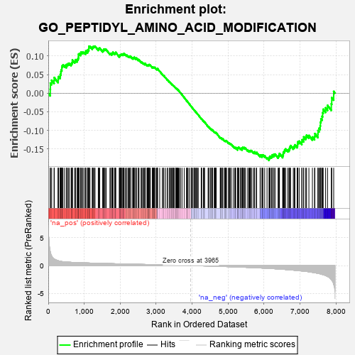
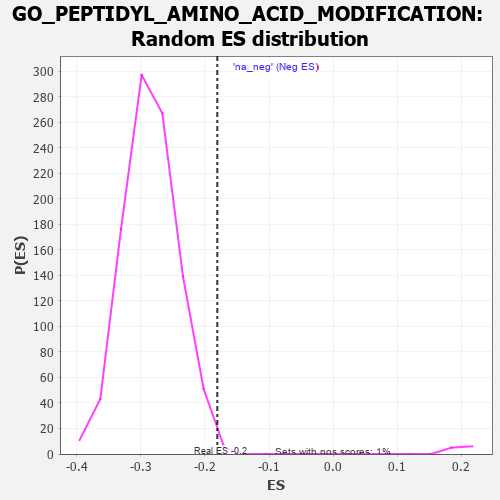

| | | Dataset | 7d |
| Phenotype | NoPhenotypeAvailable |
| Upregulated in class | na_neg |
| GeneSet | GO_PEPTIDYL_AMINO_ACID_MODIFICATION |
| Enrichment Score (ES) | -0.18063273 |
| Normalized Enrichment Score (NES) | -0.63450766 |
| Nominal p-value | 0.99696666 |
| FDR q-value | 0.9985112 |
| FWER p-Value | 1.0 |
Table: GSEA Results Summary

Fig 1: Enrichment plot: GO_PEPTIDYL_AMINO_ACID_MODIFICATION
Profile of the Running ES Score & Positions of GeneSet Members on the Rank Ordered List
| PROBE | GENE SYMBOL | GENE_TITLE | RANK IN GENE LIST | RANK METRIC SCORE | RUNNING ES | CORE ENRICHMENT | | 1 | DCLK1 | | | 55 | 2.532 | 0.0104 | No |
| 2 | MAST2 | | | 59 | 2.459 | 0.0272 | No |
| 3 | UBE2K | | | 94 | 1.739 | 0.0348 | No |
| 4 | SPI1 | | | 162 | 1.182 | 0.0343 | No |
| 5 | AXIN1 | | | 166 | 1.159 | 0.0420 | No |
| 6 | ULK1 | | | 272 | 0.875 | 0.0343 | No |
| 7 | HGF | | | 276 | 0.870 | 0.0400 | No |
| 8 | DPH3 | | | 287 | 0.844 | 0.0445 | No |
| 9 | NUP85 | | | 329 | 0.772 | 0.0446 | No |
| 10 | WEE2 | | | 333 | 0.766 | 0.0495 | No |
| 11 | CNOT7 | | | 348 | 0.750 | 0.0529 | No |
| 12 | GSK3A | | | 351 | 0.745 | 0.0578 | No |
| 13 | ARNT | | | 357 | 0.741 | 0.0623 | No |
| 14 | DPH6 | | | 378 | 0.719 | 0.0647 | No |
| 15 | CLSPN | | | 379 | 0.719 | 0.0697 | No |
| 16 | BAX | | | 387 | 0.711 | 0.0737 | No |
| 17 | EED | | | 409 | 0.690 | 0.0758 | No |
| 18 | HAT1 | | | 454 | 0.659 | 0.0746 | No |
| 19 | MYOD1 | | | 504 | 0.628 | 0.0726 | No |
| 20 | NUP54 | | | 505 | 0.627 | 0.0770 | No |
| 21 | PKN1 | | | 535 | 0.619 | 0.0775 | No |
| 22 | JMJD6 | | | 553 | 0.613 | 0.0795 | No |
| 23 | CCNB1 | | | 581 | 0.601 | 0.0802 | No |
| 24 | AURKC | | | 633 | 0.583 | 0.0775 | No |
| 25 | NOC2L | | | 647 | 0.578 | 0.0799 | No |
| 26 | HES5 | | | 661 | 0.571 | 0.0821 | No |
| 27 | DPH1 | | | 669 | 0.570 | 0.0852 | No |
| 28 | PLOD1 | | | 670 | 0.570 | 0.0892 | No |
| 29 | WDR61 | | | 734 | 0.549 | 0.0847 | No |
| 30 | SUMO3 | | | 753 | 0.544 | 0.0862 | No |
| 31 | SETD3 | | | 754 | 0.544 | 0.0900 | No |
| 32 | DPH2 | | | 803 | 0.531 | 0.0874 | No |
| 33 | SETD4 | | | 807 | 0.530 | 0.0907 | No |
| 34 | RAE1 | | | 827 | 0.524 | 0.0918 | No |
| 35 | PHF10 | | | 834 | 0.523 | 0.0947 | No |
| 36 | SGF29 | | | 840 | 0.521 | 0.0977 | No |
| 37 | PPWD1 | | | 841 | 0.521 | 0.1013 | No |
| 38 | PPIE | | | 842 | 0.521 | 0.1049 | No |
| 39 | BAZ1B | | | 861 | 0.516 | 0.1062 | No |
| 40 | HCFC1 | | | 902 | 0.506 | 0.1045 | No |
| 41 | STOX1 | | | 905 | 0.506 | 0.1077 | No |
| 42 | NLK | | | 911 | 0.504 | 0.1106 | No |
| 43 | PTPA | | | 947 | 0.497 | 0.1095 | No |
| 44 | CTR9 | | | 964 | 0.492 | 0.1108 | No |
| 45 | MEN1 | | | 1003 | 0.483 | 0.1092 | No |
| 46 | ING3 | | | 1039 | 0.476 | 0.1079 | No |
| 47 | AKT1 | | | 1040 | 0.476 | 0.1112 | No |
| 48 | TAF9 | | | 1046 | 0.475 | 0.1139 | No |
| 49 | CDK10 | | | 1092 | 0.465 | 0.1112 | No |
| 50 | DPM3 | | | 1097 | 0.464 | 0.1139 | No |
| 51 | BRD8 | | | 1101 | 0.463 | 0.1168 | No |
| 52 | NUP93 | | | 1127 | 0.459 | 0.1167 | No |
| 53 | SRC | | | 1128 | 0.459 | 0.1199 | No |
| 54 | KMT2A | | | 1130 | 0.458 | 0.1229 | No |
| 55 | NCK2 | | | 1131 | 0.458 | 0.1261 | No |
| 56 | NUP43 | | | 1160 | 0.453 | 0.1256 | No |
| 57 | PPIL2 | | | 1222 | 0.443 | 0.1207 | No |
| 58 | KAT8 | | | 1231 | 0.442 | 0.1227 | No |
| 59 | KAT7 | | | 1240 | 0.440 | 0.1248 | No |
| 60 | PPIL1 | | | 1262 | 0.437 | 0.1251 | No |
| 61 | LOXL4 | | | 1278 | 0.434 | 0.1261 | No |
| 62 | FKBP6 | | | 1301 | 0.428 | 0.1262 | No |
| 63 | FKBP4 | | | 1390 | 0.412 | 0.1176 | No |
| 64 | DOCK7 | | | 1398 | 0.410 | 0.1195 | No |
| 65 | CARM1 | | | 1413 | 0.408 | 0.1205 | No |
| 66 | NUP88 | | | 1429 | 0.404 | 0.1214 | No |
| 67 | TAF6 | | | 1512 | 0.389 | 0.1133 | No |
| 68 | LIAS | | | 1524 | 0.387 | 0.1146 | No |
| 69 | PIN4 | | | 1540 | 0.385 | 0.1153 | No |
| 70 | DPF3 | | | 1541 | 0.385 | 0.1180 | No |
| 71 | DCAF1 | | | 1559 | 0.381 | 0.1184 | No |
| 72 | TADA3 | | | 1580 | 0.378 | 0.1184 | No |
| 73 | ALG8 | | | 1610 | 0.372 | 0.1172 | No |
| 74 | PLOD3 | | | 1715 | 0.353 | 0.1061 | No |
| 75 | KMT2E | | | 1730 | 0.350 | 0.1067 | No |
| 76 | PPIL4 | | | 1765 | 0.343 | 0.1046 | No |
| 77 | VRK1 | | | 1766 | 0.343 | 0.1070 | No |
| 78 | NUP58 | | | 1787 | 0.340 | 0.1068 | No |
| 79 | LIPT2 | | | 1792 | 0.339 | 0.1086 | No |
| 80 | FNIP1 | | | 1798 | 0.338 | 0.1103 | No |
| 81 | RTF1 | | | 1844 | 0.329 | 0.1067 | No |
| 82 | SMAD4 | | | 1860 | 0.326 | 0.1070 | No |
| 83 | NUP62 | | | 1871 | 0.324 | 0.1080 | No |
| 84 | RBBP5 | | | 1875 | 0.323 | 0.1098 | No |
| 85 | MCFD2 | | | 1975 | 0.309 | 0.0990 | No |
| 86 | BRSK2 | | | 1979 | 0.308 | 0.1008 | No |
| 87 | ROR1 | | | 1993 | 0.306 | 0.1012 | No |
| 88 | MCRS1 | | | 1996 | 0.305 | 0.1031 | No |
| 89 | RAF1 | | | 2011 | 0.303 | 0.1033 | No |
| 90 | DMAP1 | | | 2025 | 0.301 | 0.1037 | No |
| 91 | VPS25 | | | 2033 | 0.300 | 0.1049 | No |
| 92 | IRF4 | | | 2054 | 0.298 | 0.1044 | No |
| 93 | KDM3A | | | 2078 | 0.294 | 0.1034 | No |
| 94 | BRPF1 | | | 2085 | 0.293 | 0.1047 | No |
| 95 | TAF7 | | | 2092 | 0.292 | 0.1059 | No |
| 96 | BMP7 | | | 2107 | 0.290 | 0.1061 | No |
| 97 | JADE1 | | | 2141 | 0.286 | 0.1038 | No |
| 98 | DDR1 | | | 2176 | 0.280 | 0.1013 | No |
| 99 | SYK | | | 2186 | 0.278 | 0.1020 | No |
| 100 | CDK2 | | | 2226 | 0.272 | 0.0988 | No |
| 101 | DPM1 | | | 2240 | 0.270 | 0.0990 | No |
| 102 | PRDM5 | | | 2265 | 0.265 | 0.0977 | No |
| 103 | NSD3 | | | 2279 | 0.263 | 0.0978 | No |
| 104 | AIP | | | 2281 | 0.263 | 0.0995 | No |
| 105 | CLK4 | | | 2329 | 0.256 | 0.0952 | No |
| 106 | MIF | | | 2357 | 0.252 | 0.0934 | No |
| 107 | SIN3A | | | 2361 | 0.251 | 0.0947 | No |
| 108 | PPID | | | 2376 | 0.249 | 0.0946 | No |
| 109 | HIPK2 | | | 2389 | 0.247 | 0.0948 | No |
| 110 | SAE1 | | | 2390 | 0.247 | 0.0965 | No |
| 111 | MET | | | 2430 | 0.240 | 0.0931 | No |
| 112 | KAT6A | | | 2444 | 0.237 | 0.0930 | No |
| 113 | KDM1A | | | 2447 | 0.237 | 0.0944 | No |
| 114 | MELK | | | 2499 | 0.227 | 0.0893 | No |
| 115 | KAT2B | | | 2502 | 0.226 | 0.0906 | No |
| 116 | MBD3 | | | 2524 | 0.223 | 0.0894 | No |
| 117 | PIAS2 | | | 2581 | 0.215 | 0.0836 | No |
| 118 | QPCT | | | 2591 | 0.215 | 0.0839 | No |
| 119 | NUP50 | | | 2625 | 0.209 | 0.0811 | No |
| 120 | KAT5 | | | 2644 | 0.206 | 0.0801 | No |
| 121 | EPC1 | | | 2663 | 0.204 | 0.0792 | No |
| 122 | TAF12 | | | 2686 | 0.201 | 0.0777 | No |
| 123 | KDM6A | | | 2690 | 0.200 | 0.0787 | No |
| 124 | ZGPAT | | | 2694 | 0.200 | 0.0797 | No |
| 125 | LMAN1 | | | 2743 | 0.192 | 0.0748 | No |
| 126 | PPIA | | | 2754 | 0.190 | 0.0748 | No |
| 127 | TTLL1 | | | 2764 | 0.189 | 0.0749 | No |
| 128 | MAGT1 | | | 2780 | 0.186 | 0.0743 | No |
| 129 | NSD2 | | | 2784 | 0.185 | 0.0752 | No |
| 130 | PPIH | | | 2790 | 0.184 | 0.0758 | No |
| 131 | ATR | | | 2800 | 0.183 | 0.0759 | No |
| 132 | FER | | | 2803 | 0.183 | 0.0769 | No |
| 133 | KAT6B | | | 2821 | 0.180 | 0.0759 | No |
| 134 | PHF14 | | | 2838 | 0.178 | 0.0751 | No |
| 135 | WDR5 | | | 2892 | 0.168 | 0.0693 | No |
| 136 | FGFR2 | | | 2895 | 0.167 | 0.0702 | No |
| 137 | DPH5 | | | 2909 | 0.164 | 0.0697 | No |
| 138 | ERO1A | | | 2925 | 0.162 | 0.0688 | No |
| 139 | ACVR1 | | | 2932 | 0.161 | 0.0692 | No |
| 140 | NMT2 | | | 2947 | 0.158 | 0.0684 | No |
| 141 | SOCS4 | | | 2953 | 0.157 | 0.0689 | No |
| 142 | BTK | | | 2958 | 0.156 | 0.0694 | No |
| 143 | SMYD1 | | | 2998 | 0.150 | 0.0654 | No |
| 144 | BRD7 | | | 3018 | 0.147 | 0.0639 | No |
| 145 | BRCA2 | | | 3024 | 0.146 | 0.0643 | No |
| 146 | MARK3 | | | 3031 | 0.145 | 0.0645 | No |
| 147 | PIAS4 | | | 3034 | 0.145 | 0.0652 | No |
| 148 | LEF1 | | | 3037 | 0.144 | 0.0660 | No |
| 149 | TLK1 | | | 3098 | 0.137 | 0.0591 | No |
| 150 | SCYL1 | | | 3172 | 0.126 | 0.0504 | No |
| 151 | TWF1 | | | 3199 | 0.123 | 0.0479 | No |
| 152 | PRDX4 | | | 3214 | 0.120 | 0.0469 | No |
| 153 | NUP98 | | | 3261 | 0.112 | 0.0416 | No |
| 154 | PARP2 | | | 3316 | 0.103 | 0.0353 | No |
| 155 | PPIL3 | | | 3317 | 0.103 | 0.0360 | No |
| 156 | SMAD7 | | | 3369 | 0.093 | 0.0300 | No |
| 157 | ALG5 | | | 3373 | 0.093 | 0.0302 | No |
| 158 | TESK2 | | | 3401 | 0.089 | 0.0273 | No |
| 159 | SETD6 | | | 3420 | 0.087 | 0.0256 | No |
| 160 | TOP1 | | | 3449 | 0.084 | 0.0225 | No |
| 161 | STT3A | | | 3453 | 0.084 | 0.0227 | No |
| 162 | CDK5 | | | 3480 | 0.080 | 0.0199 | No |
| 163 | FKBP2 | | | 3488 | 0.079 | 0.0195 | No |
| 164 | FES | | | 3501 | 0.077 | 0.0185 | No |
| 165 | PIN1 | | | 3543 | 0.069 | 0.0136 | No |
| 166 | KMT2C | | | 3544 | 0.069 | 0.0140 | No |
| 167 | FUT8 | | | 3551 | 0.067 | 0.0137 | No |
| 168 | RPN2 | | | 3565 | 0.065 | 0.0125 | No |
| 169 | PARD3 | | | 3584 | 0.063 | 0.0106 | No |
| 170 | MAPK3 | | | 3589 | 0.062 | 0.0105 | No |
| 171 | DOK7 | | | 3603 | 0.059 | 0.0092 | No |
| 172 | CBL | | | 3621 | 0.056 | 0.0073 | No |
| 173 | OSTC | | | 3646 | 0.052 | 0.0046 | No |
| 174 | STT3B | | | 3676 | 0.047 | 0.0011 | No |
| 175 | HSF1 | | | 3718 | 0.039 | -0.0040 | No |
| 176 | NSD1 | | | 3779 | 0.031 | -0.0116 | No |
| 177 | SMG1 | | | 3843 | 0.021 | -0.0197 | No |
| 178 | DGKQ | | | 3856 | 0.020 | -0.0211 | No |
| 179 | RPN1 | | | 3859 | 0.019 | -0.0213 | No |
| 180 | TPST1 | | | 3884 | 0.013 | -0.0243 | No |
| 181 | IFIH1 | | | 3919 | 0.006 | -0.0287 | No |
| 182 | IGF1R | | | 3970 | -0.002 | -0.0353 | No |
| 183 | CHMP6 | | | 3977 | -0.003 | -0.0360 | No |
| 184 | EYA1 | | | 3987 | -0.006 | -0.0372 | No |
| 185 | PARP1 | | | 4014 | -0.010 | -0.0405 | No |
| 186 | ATG5 | | | 4051 | -0.016 | -0.0451 | No |
| 187 | PKN2 | | | 4060 | -0.017 | -0.0460 | No |
| 188 | TAL1 | | | 4064 | -0.018 | -0.0463 | No |
| 189 | SFRP2 | | | 4065 | -0.018 | -0.0462 | No |
| 190 | DPH7 | | | 4100 | -0.024 | -0.0504 | No |
| 191 | MTOR | | | 4114 | -0.025 | -0.0520 | No |
| 192 | ABL1 | | | 4125 | -0.027 | -0.0531 | No |
| 193 | WNK3 | | | 4153 | -0.034 | -0.0564 | No |
| 194 | GFI1 | | | 4168 | -0.037 | -0.0580 | No |
| 195 | RPTOR | | | 4252 | -0.050 | -0.0685 | No |
| 196 | PAX5 | | | 4255 | -0.051 | -0.0684 | No |
| 197 | RSF1 | | | 4267 | -0.053 | -0.0695 | No |
| 198 | BAG4 | | | 4314 | -0.061 | -0.0750 | No |
| 199 | CTBP1 | | | 4323 | -0.064 | -0.0756 | No |
| 200 | GLRX5 | | | 4340 | -0.066 | -0.0773 | No |
| 201 | SETD5 | | | 4343 | -0.067 | -0.0771 | No |
| 202 | SETD2 | | | 4443 | -0.084 | -0.0894 | No |
| 203 | ERCC6 | | | 4464 | -0.087 | -0.0915 | No |
| 204 | LRRK2 | | | 4467 | -0.087 | -0.0911 | No |
| 205 | ILK | | | 4510 | -0.096 | -0.0959 | No |
| 206 | SNW1 | | | 4514 | -0.096 | -0.0957 | No |
| 207 | NTRK2 | | | 4543 | -0.104 | -0.0986 | No |
| 208 | ABI2 | | | 4554 | -0.106 | -0.0992 | No |
| 209 | CXXC1 | | | 4557 | -0.107 | -0.0987 | No |
| 210 | BAG6 | | | 4563 | -0.108 | -0.0986 | No |
| 211 | GATA3 | | | 4614 | -0.120 | -0.1043 | No |
| 212 | CLK2 | | | 4628 | -0.124 | -0.1051 | No |
| 213 | GCSH | | | 4633 | -0.125 | -0.1048 | No |
| 214 | TAF10 | | | 4652 | -0.128 | -0.1062 | No |
| 215 | FGFR3 | | | 4656 | -0.129 | -0.1057 | No |
| 216 | SENP7 | | | 4669 | -0.132 | -0.1064 | No |
| 217 | WBP2 | | | 4780 | -0.153 | -0.1197 | No |
| 218 | SRPK2 | | | 4790 | -0.155 | -0.1198 | No |
| 219 | PLCL2 | | | 4807 | -0.159 | -0.1208 | No |
| 220 | FBXW7 | | | 4816 | -0.161 | -0.1207 | No |
| 221 | CWC27 | | | 4848 | -0.168 | -0.1236 | No |
| 222 | SGK1 | | | 4852 | -0.168 | -0.1228 | No |
| 223 | MARK2 | | | 4899 | -0.177 | -0.1276 | No |
| 224 | TLK2 | | | 4909 | -0.179 | -0.1275 | No |
| 225 | ATRX | | | 4929 | -0.184 | -0.1287 | No |
| 226 | SUZ12 | | | 4931 | -0.185 | -0.1276 | No |
| 227 | EP300 | | | 4941 | -0.186 | -0.1275 | No |
| 228 | PRKDC | | | 4955 | -0.189 | -0.1278 | No |
| 229 | DAD1 | | | 5008 | -0.199 | -0.1333 | No |
| 230 | TAF5 | | | 5031 | -0.204 | -0.1347 | No |
| 231 | PDPK1 | | | 5043 | -0.207 | -0.1347 | No |
| 232 | RAP2C | | | 5073 | -0.218 | -0.1370 | No |
| 233 | ING4 | | | 5084 | -0.221 | -0.1368 | No |
| 234 | FLCN | | | 5140 | -0.235 | -0.1423 | No |
| 235 | HDAC6 | | | 5183 | -0.244 | -0.1461 | No |
| 236 | ASH1L | | | 5203 | -0.248 | -0.1469 | No |
| 237 | ATM | | | 5210 | -0.249 | -0.1459 | No |
| 238 | PTEN | | | 5262 | -0.261 | -0.1508 | No |
| 239 | CDK1 | | | 5264 | -0.262 | -0.1491 | No |
| 240 | WDR82 | | | 5268 | -0.264 | -0.1476 | No |
| 241 | EPHA4 | | | 5273 | -0.265 | -0.1463 | No |
| 242 | P4HA2 | | | 5288 | -0.269 | -0.1463 | No |
| 243 | FKBP8 | | | 5296 | -0.270 | -0.1453 | No |
| 244 | SGK3 | | | 5338 | -0.282 | -0.1487 | No |
| 245 | EPHA1 | | | 5349 | -0.285 | -0.1480 | No |
| 246 | DLG4 | | | 5388 | -0.293 | -0.1510 | No |
| 247 | PRDX3 | | | 5389 | -0.293 | -0.1489 | No |
| 248 | MGAT1 | | | 5395 | -0.294 | -0.1475 | No |
| 249 | SUMO2 | | | 5402 | -0.296 | -0.1463 | No |
| 250 | LATS1 | | | 5412 | -0.298 | -0.1454 | No |
| 251 | CBLB | | | 5445 | -0.306 | -0.1474 | No |
| 252 | FRK | | | 5451 | -0.307 | -0.1459 | No |
| 253 | PPIG | | | 5484 | -0.314 | -0.1479 | No |
| 254 | FGFR1 | | | 5543 | -0.332 | -0.1532 | No |
| 255 | SPHK1 | | | 5576 | -0.339 | -0.1550 | No |
| 256 | SMYD2 | | | 5598 | -0.344 | -0.1554 | No |
| 257 | GNL3 | | | 5614 | -0.349 | -0.1549 | No |
| 258 | ROR2 | | | 5626 | -0.353 | -0.1539 | No |
| 259 | WNK1 | | | 5650 | -0.362 | -0.1544 | No |
| 260 | TTBK2 | | | 5700 | -0.376 | -0.1582 | No |
| 261 | CALCR | | | 5730 | -0.386 | -0.1593 | No |
| 262 | PDCL3 | | | 5738 | -0.388 | -0.1575 | No |
| 263 | TRPC6 | | | 5784 | -0.401 | -0.1606 | No |
| 264 | MGAT2 | | | 5794 | -0.403 | -0.1590 | No |
| 265 | HINT2 | | | 5889 | -0.431 | -0.1683 | No |
| 266 | SET | | | 5895 | -0.434 | -0.1659 | No |
| 267 | PCGF2 | | | 5943 | -0.451 | -0.1689 | No |
| 268 | LDB1 | | | 5944 | -0.451 | -0.1658 | No |
| 269 | TTBK1 | | | 5969 | -0.460 | -0.1657 | No |
| 270 | PRKX | | | 6016 | -0.477 | -0.1684 | No |
| 271 | PLK1 | | | 6082 | -0.500 | -0.1734 | No |
| 272 | TNKS | | | 6138 | -0.516 | -0.1770 | Yes |
| 273 | STK4 | | | 6145 | -0.518 | -0.1742 | Yes |
| 274 | ROCK1 | | | 6152 | -0.520 | -0.1714 | Yes |
| 275 | EGR1 | | | 6165 | -0.527 | -0.1693 | Yes |
| 276 | INSR | | | 6204 | -0.538 | -0.1705 | Yes |
| 277 | MVP | | | 6223 | -0.543 | -0.1691 | Yes |
| 278 | EHD4 | | | 6227 | -0.545 | -0.1657 | Yes |
| 279 | ZBED1 | | | 6268 | -0.561 | -0.1670 | Yes |
| 280 | STK39 | | | 6274 | -0.563 | -0.1637 | Yes |
| 281 | DCLK3 | | | 6305 | -0.578 | -0.1636 | Yes |
| 282 | TRPM4 | | | 6390 | -0.612 | -0.1704 | Yes |
| 283 | NEK1 | | | 6402 | -0.618 | -0.1675 | Yes |
| 284 | TTLL6 | | | 6422 | -0.629 | -0.1656 | Yes |
| 285 | CSK | | | 6428 | -0.630 | -0.1619 | Yes |
| 286 | CEP41 | | | 6516 | -0.669 | -0.1686 | Yes |
| 287 | ACE | | | 6526 | -0.674 | -0.1651 | Yes |
| 288 | DYRK2 | | | 6533 | -0.677 | -0.1612 | Yes |
| 289 | DDR2 | | | 6542 | -0.681 | -0.1575 | Yes |
| 290 | DOHH | | | 6563 | -0.690 | -0.1553 | Yes |
| 291 | TTLL5 | | | 6574 | -0.696 | -0.1517 | Yes |
| 292 | TPR | | | 6597 | -0.709 | -0.1497 | Yes |
| 293 | TTLL9 | | | 6657 | -0.743 | -0.1522 | Yes |
| 294 | PAK1 | | | 6691 | -0.757 | -0.1513 | Yes |
| 295 | EGFR | | | 6708 | -0.765 | -0.1481 | Yes |
| 296 | GSK3B | | | 6719 | -0.768 | -0.1440 | Yes |
| 297 | TTLL7 | | | 6736 | -0.778 | -0.1407 | Yes |
| 298 | PAQR3 | | | 6812 | -0.819 | -0.1448 | Yes |
| 299 | TPGS2 | | | 6838 | -0.836 | -0.1423 | Yes |
| 300 | TTLL3 | | | 6857 | -0.845 | -0.1387 | Yes |
| 301 | CSPG4 | | | 6918 | -0.878 | -0.1405 | Yes |
| 302 | LRP8 | | | 6931 | -0.889 | -0.1358 | Yes |
| 303 | DOT1L | | | 6939 | -0.897 | -0.1305 | Yes |
| 304 | DPY30 | | | 6976 | -0.923 | -0.1288 | Yes |
| 305 | PIBF1 | | | 7049 | -0.966 | -0.1315 | Yes |
| 306 | GRM5 | | | 7053 | -0.969 | -0.1251 | Yes |
| 307 | CSH1 | | | 7098 | -0.995 | -0.1240 | Yes |
| 308 | RYK | | | 7102 | -1.000 | -0.1174 | Yes |
| 309 | TMX3 | | | 7158 | -1.040 | -0.1174 | Yes |
| 310 | PTPRJ | | | 7180 | -1.054 | -0.1128 | Yes |
| 311 | DYDC1 | | | 7246 | -1.118 | -0.1135 | Yes |
| 312 | GPD1L | | | 7343 | -1.215 | -0.1176 | Yes |
| 313 | LOXL2 | | | 7403 | -1.269 | -0.1165 | Yes |
| 314 | DYRK4 | | | 7412 | -1.283 | -0.1086 | Yes |
| 315 | PPIL6 | | | 7496 | -1.394 | -0.1097 | Yes |
| 316 | PPIB | | | 7499 | -1.396 | -0.1003 | Yes |
| 317 | DCLK2 | | | 7529 | -1.439 | -0.0941 | Yes |
| 318 | TTLL4 | | | 7560 | -1.491 | -0.0876 | Yes |
| 319 | CALM1 | | | 7567 | -1.499 | -0.0780 | Yes |
| 320 | MOCS3 | | | 7581 | -1.523 | -0.0691 | Yes |
| 321 | IWS1 | | | 7613 | -1.587 | -0.0621 | Yes |
| 322 | PKD1 | | | 7628 | -1.611 | -0.0527 | Yes |
| 323 | TAF1 | | | 7643 | -1.633 | -0.0431 | Yes |
| 324 | P4HA1 | | | 7710 | -1.798 | -0.0393 | Yes |
| 325 | PDE4D | | | 7764 | -1.944 | -0.0327 | Yes |
| 326 | CALM3 | | | 7869 | -2.525 | -0.0287 | Yes |
| 327 | FYN | | | 7881 | -2.622 | -0.0119 | Yes |
| 328 | ARRB1 | | | 7935 | -3.377 | 0.0047 | Yes |
Table: GSEA details [plain text format]

Fig 2: GO_PEPTIDYL_AMINO_ACID_MODIFICATION: Random ES distribution
Gene set null distribution of ES for GO_PEPTIDYL_AMINO_ACID_MODIFICATION